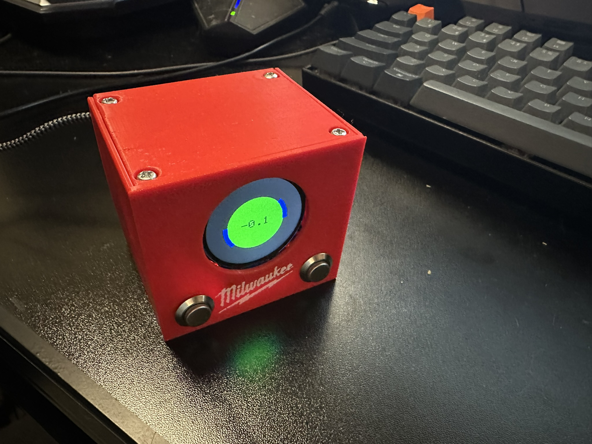
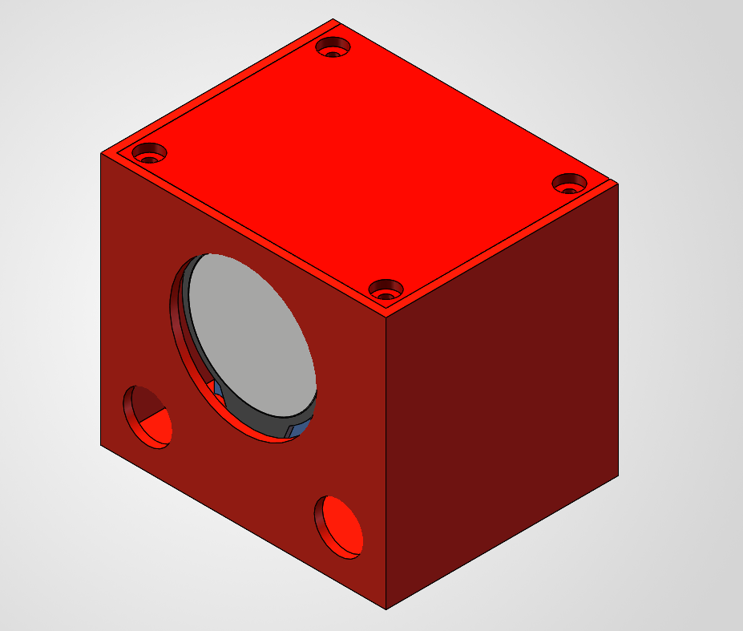
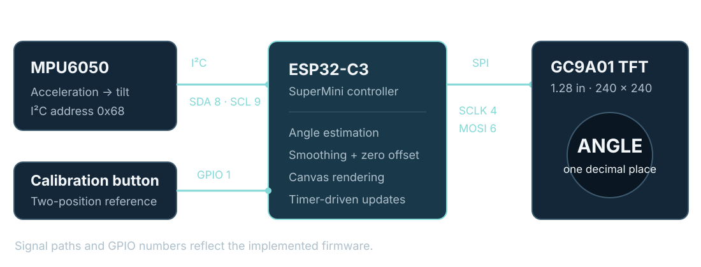

Packaging and access
The front panel locates the round screen and two physical controls. A separate lid provides access for wiring and assembly without rebuilding the enclosure.
Mechanical design · Electronics · Embedded C++
A working tilt-measurement prototype that brings a custom enclosure, an inertial sensor, and embedded firmware together in one handheld device.
I designed the housing and controller mounts in SOLIDWORKS, integrated the electronics, and wrote Arduino firmware to turn sensor readings into a readable angle on a circular display.
Explore the build
The project
A compact digital level with a clear angle readout, a repeatable way to establish a zero reference, and an enclosure that holds the electronics in a practical form.
The engineering work spans the physical package and the behavior of the device: fitting the boards, routing the connections, smoothing the displayed value, and making calibration accessible from the front panel.
The prototype is assembled and photographed with a live angle readout. The reviewed firmware includes filtered tilt measurement and a two-position zero-reference routine. Measurement accuracy and long-term stability still need controlled testing.
Mechanical development
The CAD and the physical build show how the enclosure developed from a component package into an assembled device.

The front panel locates the round screen and two physical controls. A separate lid provides access for wiring and assembly without rebuilding the enclosure.
Separate ESP32-C3 mount and clip models address board retention inside the housing. The mount uses equation-driven dimensions, including a 3 mm mount-thickness parameter.
The project includes SOLIDWORKS parts and assemblies, STEP exports, STL files, and 3MF print files for the controller mount and enclosure components.
Hardware integration
The ESP32-C3 reads the sensor over I²C and drives the round color display over SPI. A front-panel button controls the calibration sequence.

| Interface | ESP32-C3 GPIO |
|---|---|
| MPU6050 SDA / SCL | 8 / 9 |
| Display SCLK / MOSI | 4 / 6 |
| Display CS / DC / RST | 7 / 3 / 10 |
| Calibration button | 1 · internal pull-up |
Two buttons are visible on the enclosure. The reviewed firmware implements one calibration-button input. An audible-output pin is reserved, but an audible level indication is not active in this version.
Embedded software
Arduino C++ firmware connects the physical measurement to a steady numeric readout and a guided zero-reference workflow.
Measurement
The sensor is configured for a ±2 g acceleration range with a 21 Hz device filter. The firmware estimates tilt in the X–Z plane from the acceleration vector.
angle = atan2(−ax, az) × 180 / πThis is an accelerometer-based tilt estimate. Movement and vibration can affect it; active gyroscope fusion is not part of the current estimator.
Signal processing
An exponential smoothing step reduces changes between readings. The filter starts from the first measured angle rather than an arbitrary zero value.
filtered += 0.2 × (angle − filtered)The smoothing factor trades response speed against visible fluctuation. Filter settings still need evaluation against a reference instrument.
Display
A timer flag schedules measurement and display work in the main loop. The numeric value and graphical arcs are drawn into a 16-bit off-screen canvas, then transferred to the TFT over SPI.
Angles are formatted to one decimal place: 0.1° display resolution. That formatting does not establish 0.1° measurement accuracy.
Calibration interaction
The button input uses a 25 ms debounce interval. Two presses capture the readings used to calculate the offset.
Development and validation
What this project demonstrates
This build brings together CAD, practical assembly, hardware interfaces, and firmware debugging—the same cross-disciplinary approach I use when working with industrial equipment.